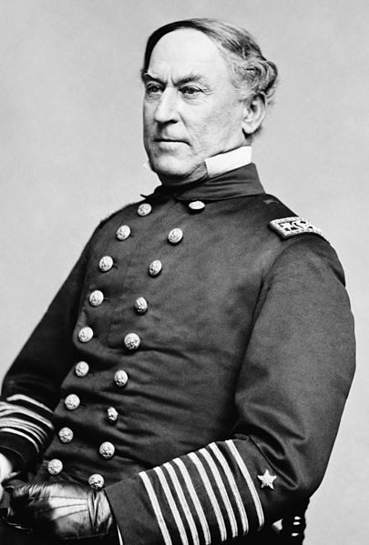
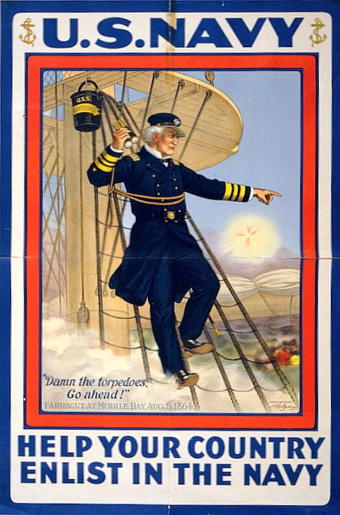

|
The Mobile Campaign brought the capital of Alabama under
Union control. Although the city would have been an
attractive prize early in the war, its capture in April of
1865 had little significance because it came after the Civil
|

Rear Adm. David Glasgow Farragut
|
a War was effectively over.
Before the Civil War, Mobile was one of the most
prosperous cities in the South. The only major seaport in
Alabama, it exported all of the state's cotton. Among the
cities on the Gulf Coast, Mobile was second only to New
Orleans in total value of exports. When the Civil War came,
Mobile's cotton trade was largely cut off by the Union's
naval blockade, but the city continued to serve a variety of
other important roles. It housed a number of large
hospitals, along with training camps for soldiers, and a
shipyard used to construct ironclad vessels.
Although Union leaders had an eye on Mobile throughout
the war, particularly after the fall of New Orleans and
Vicksburg, it took until the summer of 1864 for Northern
forces to move against the city. On August 5, a Union naval
fleet led by Admiral David Farragut seized control of Mobile
Bay. This brought an end to Confederate shipbuilding in the
city, and rendered the port unavailable to southern ships
trying to avoid the Union blockade. Farragut hoped that
control of Mobile Bay would facilitate the quick capture of
the entire city, but eight months of naval bombardment
failed to drive the Confederates out of Mobile. Finally, on
March 17, 1865, 20 ships and 45,000 men were ordered to
undertake an offensive against the city. The Union force
vastly outnumbered the 10,000 men and 5 boats left to guard
Mobile under the command of General Dabney Herndon Maury.
The Mobile campaign was a two-pronged offensive. To the
|

During World War I, The U.S. Navy designed recruitment posters
featuring the Mobile campaign.
|
South of Mobile, 32,000 troops under General Edward Canby
laid siege to Spanish Fort, beginning on March 27th. The
Confederates there, outnumbered by a margin of 8-to-1, held
on for as long as they could but were compelled to surrender
after an infantry assault on April 8th. To the North of
Mobile, 13,000 troops under General Frederick Steele laid
siege to Fort Blakely, beginning on April 1st. On April 9th,
Steele's troops were joined by most of the 32,000 men who
had captured the Spanish Fort, and an infantry assault was
undertaken. After only 20 minutes, the Confederates holding
Fort Blakely were compelled to surrender. This was the final
infantry engagement of the Civil War, as Maury evacuated
Mobile three days later.
Union losses for the Mobile campaign were 1,417 men
killed, wounded or missing, while Confederate losses
exceeded 4,000 men. The majority of these losses occurred
after the Confederate capital of Richmond had fallen and the
Army of Northern Virginia had surrendered, events that
essentially concluded the Civil War. Union general-in-chief
Ulysses S. Grant later expressed his regrets that so much
blood had been shed unnecessarily, writing:
I had tried for more than two years to have an expedition
sent against Mobile when its possession by us would have
been of great advantage. It finally cost lives to take it
when its possession was of no importance, and when, if left
alone, it would have within a few days fallen into our hands
without any bloodshed whatever.
Source: Joan Waugh, ed., Facts on File Encyclopedia of American
History: Civil War and Reconstruction, 1856 to 1869 (New York: Facts on
File, 2003), 236.
|